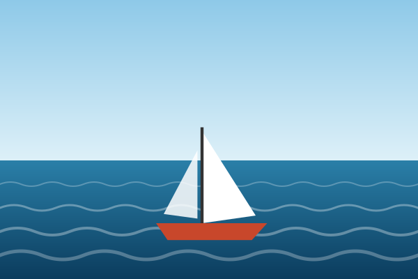
Vela ligera
Iniciación · desde 8 años
Aprende a aparejar, virar y trasluchar en un barco pequeño y estable, siempre con un monitor cerca.
- 5 sesiones de 2 horas
- Material y seguro incluidos
- Grupos de 6 personas
120 €
InscribirmePuerto de Benidorm · Desde 1998
Cursos de vela, kayak y pádel surf para todas las edades, con monitores titulados y todo el material incluido.
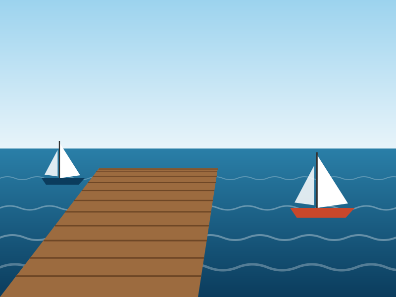
El Club Náutico Mal Pas nació en 1998 en el puerto de Benidorm con un objetivo sencillo: que cualquier persona pueda disfrutar del mar con seguridad. Empezamos con cuatro barcos y un pantalán prestado; hoy somos una escuela homologada por la Federación de Vela de la Comunitat Valenciana.
Nuestras aguas son tranquilas casi todo el año y la isla nos protege del oleaje, por eso la bahía es un lugar ideal para aprender. Trabajamos con grupos reducidos, material revisado cada temporada y un protocolo de seguridad que repasamos antes de cada salida.
Además de los cursos, organizamos regatas sociales, campus de verano y salidas para centros educativos. Si tienes una idea, cuéntanosla.
Todos los cursos incluyen chaleco, neopreno, seguro y certificado de aprovechamiento. Las plazas son limitadas.

Iniciación · desde 8 años
Aprende a aparejar, virar y trasluchar en un barco pequeño y estable, siempre con un monitor cerca.
120 €
Inscribirme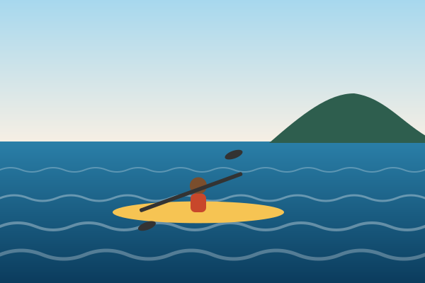
Todos los niveles · desde 10 años
Rutas guiadas por la costa hasta la cala del Mal Pas y, con buen tiempo, hasta la isla.
35 €
Inscribirme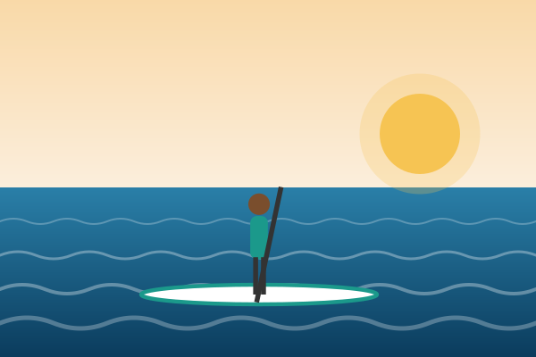
Iniciación · desde 12 años
Equilibrio, técnica de remada y seguridad en el agua. Ideal para empezar un verano activo.
60 €
Inscribirme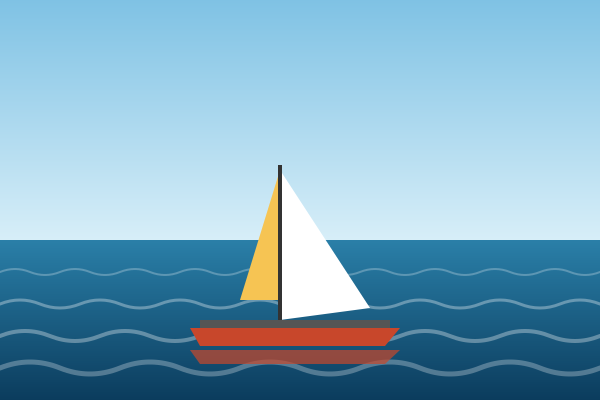
Perfeccionamiento · desde 14 años
Velocidad y trabajo en equipo en un barco de dos cascos. Requiere haber hecho el curso de vela ligera.
180 €
InscribirmeDel 1 de junio al 30 de septiembre. El resto del año, consulta los grupos de fin de semana.
| Curso | Lunes | Martes | Miércoles | Jueves | Viernes | Sábado |
|---|---|---|---|---|---|---|
| Vela ligera | 10:00 – 12:00 | 10:00 – 12:00 | — | 10:00 – 12:00 | — | 10:00 – 14:00 |
| Kayak de mar | — | 17:00 – 20:00 | — | 17:00 – 20:00 | — | 09:00 – 12:00 |
| Pádel surf | 18:00 – 19:30 | — | 18:00 – 19:30 | — | 18:00 – 19:30 | — |
| Catamarán | — | — | 16:00 – 18:00 | — | 16:00 – 18:00 | 16:00 – 18:00 |
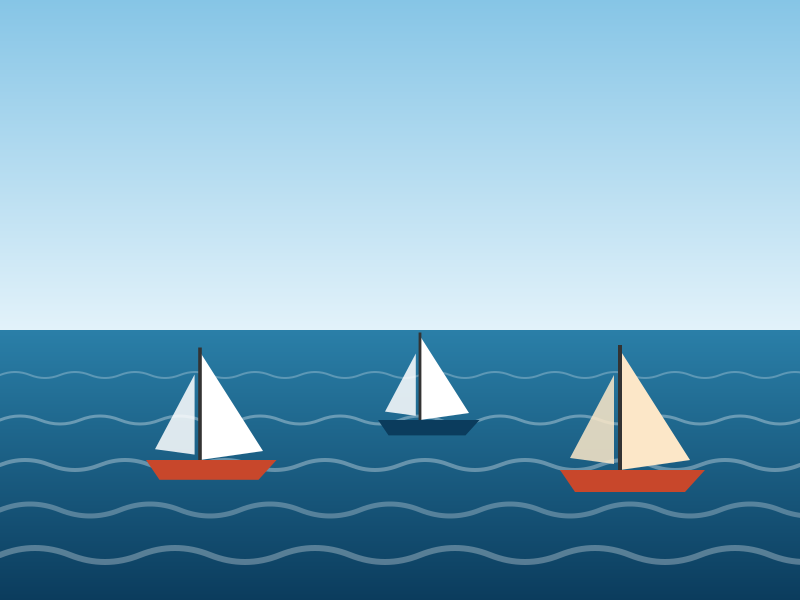
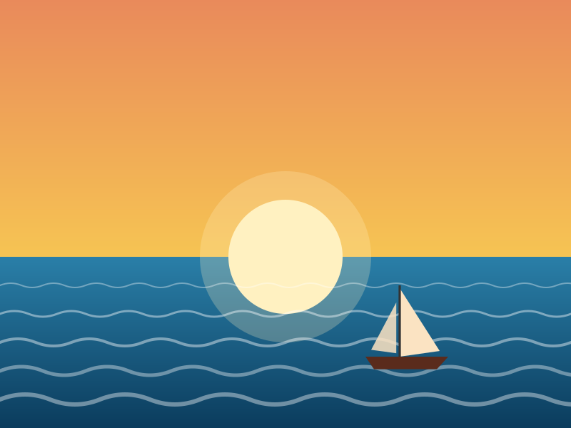
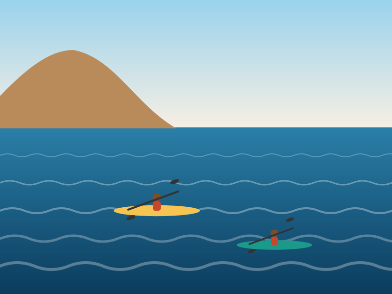
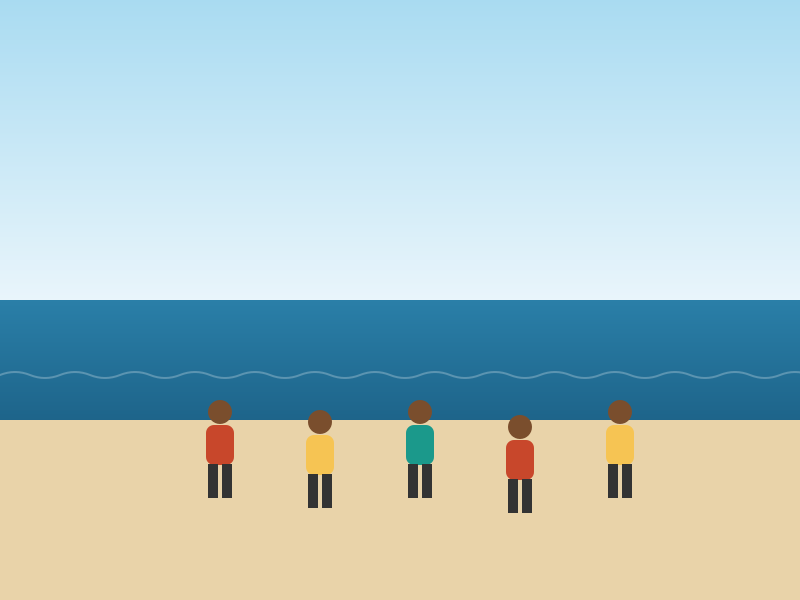
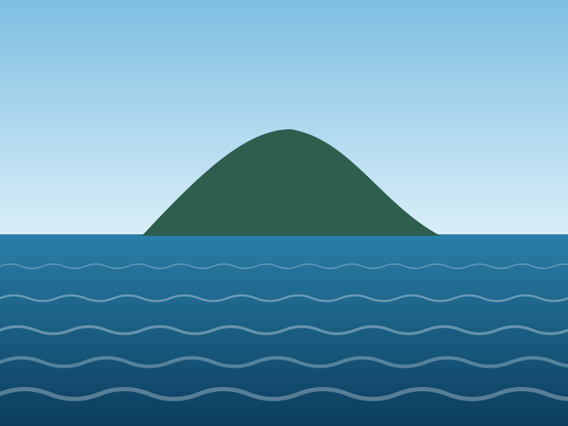
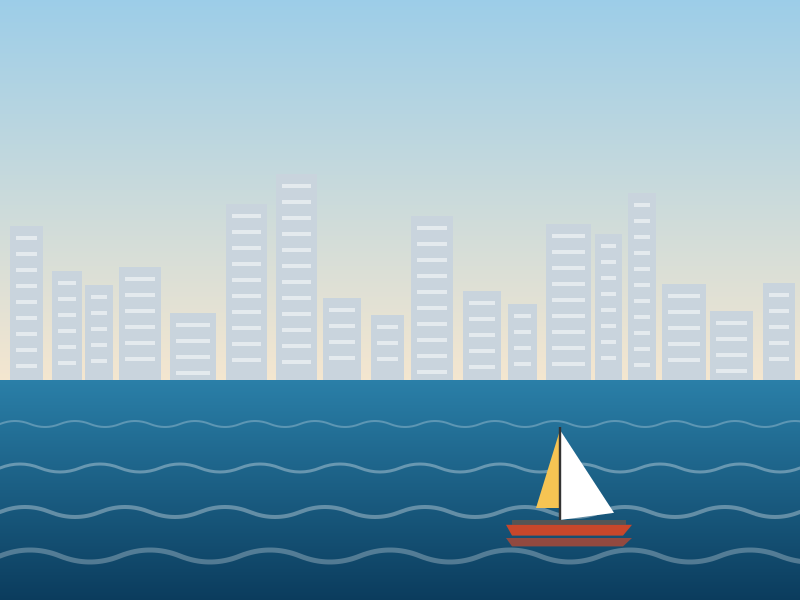
Llegué sin saber nada de vela y al tercer día ya navegaba sola. Los monitores tienen muchísima paciencia.
La ruta en kayak hasta la cala del Mal Pas es lo mejor que hemos hecho en Benidorm. Repetiremos.
Material nuevo, grupos pequeños y mucha seguridad. El curso de catamarán me ha enganchado.